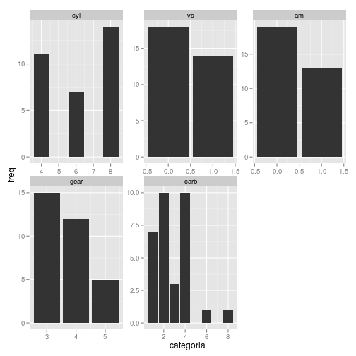

-
Aula 07 - Modelando
2015-02-02
SourceRegressão Linear e ANOVA
O R tem todo o ferramental necessário para fazer modelos lineares, a começar pelo modelo de regressão linear normal.
O R tem todo o ferramentário necessário para fazer modelos lineares, a começar pelo modelo de regressão linear norma.
Para ilustrar, vamos utilizar a base de dados
mtcarsque vem no R.Cada uma das 32 linhas da base
mtcarsrepresenta um carro. A variávelmpgé o consumo de combustível em milhas por galão (~3.76 Litros) e iremos tentar explicá-la pelas demais características dos veículos.Um pouco de descritiva
Univariada
# os dados head(mtcars)## mpg cyl disp hp drat wt qsec vs am gear carb ## Mazda RX4 21.0 6 160 110 3.90 2.620 16.46 0 1 4 4 ## Mazda RX4 Wag 21.0 6 160 110 3.90 2.875 17.02 0 1 4 4 ## Datsun 710 22.8 4 108 93 3.85 2.320 18.61 1 1 4 1 ## Hornet 4 Drive 21.4 6 258 110 3.08 3.215 19.44 1 0 3 1 ## Hornet Sportabout 18.7 8 360 175 3.15 3.440 17.02 0 0 3 2 ## Valiant 18.1 6 225 105 2.76 3.460 20.22 1 0 3 1# banco de dados das variáveis contínuas no formato "longo" mtcars_long <- mtcars %>% select(mpg, disp:qsec) %>% gather(var_continuas) # medidas resumo para variáveis contínuas mtcars_long %>% group_by(var_continuas) %>% summarise("N" = n(), "Missing" = sum(is.na(value)), "Media" = mean(value), "DesvPad" = sd(value), "Minimo" = min(value), "Q1" = quantile(value, 0.25), "Mediana" = quantile(value, 0.50), "Q3" = quantile(value, 0.75), "Maximo" = max(value)) %>% mutate_each(funs(round(.,1)), -var_continuas)## Error in n(): This function should not be called directly# boxplots mtcars_long %>% ggplot() + geom_boxplot(aes(x=1, y = value)) + facet_wrap(~var_continuas, scales = "free")
# frequencias de variáveis categóricas mtcars_freq <- mtcars %>% select(cyl, vs:carb) %>% gather(vars_categoricas) %>% rename(categoria = value) %>% group_by(vars_categoricas, categoria) %>% summarise(freq = n()) %>% group_by(vars_categoricas) %>% mutate(prop = freq/sum(freq), prop_txt = (prop*100) %>% round(0) %>% paste0("%"))## Error in rename(., categoria = value): unused argument (categoria = value)mtcars_freq## Source: local data frame [16 x 5] ## Groups: vars_categoricas ## ## vars_categoricas categoria freq prop prop_txt ## 1 cyl 4 11 0.34375 34% ## 2 cyl 6 7 0.21875 22% ## 3 cyl 8 14 0.43750 44% ## 4 vs 0 18 0.56250 56% ## 5 vs 1 14 0.43750 44% ## 6 am 0 19 0.59375 59% ## 7 am 1 13 0.40625 41% ## 8 gear 3 15 0.46875 47% ## 9 gear 4 12 0.37500 38% ## 10 gear 5 5 0.15625 16% ## 11 carb 1 7 0.21875 22% ## 12 carb 2 10 0.31250 31% ## 13 carb 3 3 0.09375 9% ## 14 carb 4 10 0.31250 31% ## 15 carb 6 1 0.03125 3% ## 16 carb 8 1 0.03125 3%# Gráfico de barras mtcars_freq %>% ggplot() + geom_bar(aes(x=categoria, y = freq), position = "dodge", stat = "identity") + facet_wrap(~vars_categoricas, scales="free")
Versus
mpg# Matriz de correlação linear mtcars %>% select(mpg, disp:qsec) %>% cor %>% round(2)## mpg disp hp drat wt qsec ## mpg 1.00 -0.85 -0.78 0.68 -0.87 0.42 ## disp -0.85 1.00 0.79 -0.71 0.89 -0.43 ## hp -0.78 0.79 1.00 -0.45 0.66 -0.71 ## drat 0.68 -0.71 -0.45 1.00 -0.71 0.09 ## wt -0.87 0.89 0.66 -0.71 1.00 -0.17 ## qsec 0.42 -0.43 -0.71 0.09 -0.17 1.00# Matriz de dispersão pairs(mtcars %>% select(mpg, disp:qsec))
Regressão linear
A função que ajusta modelo linear normal no R é
lm(). Você especifica o banco de dados e a fórmula com as variáveis que você deseja associar.ajuste <- lm(resposta ~ explicativas, data = meus_dados)O objeto
ajustecontém todos os resultados e com a ajuda de alguns comandos, você extrai tudo o que é interessante.Exemplo:
ajuste_lm <- lm(mpg ~ wt, data = mtcars) ajuste_lm## ## Call: ## lm(formula = mpg ~ wt, data = mtcars) ## ## Coefficients: ## (Intercept) wt ## 37.285 -5.344No código acima temos
mpgexplicado porwt. A saída dolm()mostra qual foi a chamada do modelo e os coeficientes ajustados. Como visto na análise descritiva, há uma clara associação linear e negativa entre as variáveis, justificando o parâmetro negativowt = -5.344. A funçãocoeficients()oucoef()nos fornece os coeficientes ajustados.Gráfico da reta ajustada:
# extrai os coeficientes ajustados coeficientes <- coef(ajuste_lm) ggplot(mtcars) + geom_point(aes(x = wt, y = mpg)) + geom_abline(intercept = coeficientes[1], slope = coeficientes[2])
summary()
A função
summary()é uma função genérica que geralmente devolve um resumo de informações úteis de praticamente qualquer classe de objetos. Para objetoslm()ela devolve:- Chamada do modelo
- Medidas resumo dos resíduos
- Tabela de coeficientes, desvios padrão e testes T para hipótese nula de parâmetros iguais a zero.
- Média dos quadrados do resíduo e os respectivos graus de liberdade; \(R^2\) e \(R^2\) ajustado da regressão; Estatística F para qualidade do ajuste (comparação com o modelo com apenas o intercepto).
summary(ajuste_lm)
plot()
A função
plot()constrói gráficos úteis para diagnóstico do modelo.# opção para mostrar 4 gráficos em uma mesma figura par(mfrow = c(2,2)) # gráficos de diagnóstico do modelo ajuste_lm plot(ajuste_lm)
# retorna ao normal par(mfrow = c(1,1))anova()
Uma parte importante da modelagem é a redução de modelos. A função
anova()compara dois (ou mais) modelos encaixados por meio da estatística F (por padrão), especialmente indicadas para modelos lineares normais. Caso seja passada apenas um ajuste à função, ela devolve a tabela de ANOVA (termos testados sequencialmente).# modelo nulo, com apenas o intercepto ajuste_lm_nulo <- lm(mpg ~ 1, data = mtcars) # modelo com wt e cyl ajuste_lm2 <- lm(mpg ~ wt + factor(cyl), data = mtcars) # compara o modelo com wt com o modelo nulo anova(ajuste_lm_nulo, ajuste_lm)## Analysis of Variance Table ## ## Model 1: mpg ~ 1 ## Model 2: mpg ~ wt ## Res.Df RSS Df Sum of Sq F Pr(>F) ## 1 31 1126.05 ## 2 30 278.32 1 847.73 91.375 1.294e-10 *** ## --- ## Signif. codes: 0 '***' 0.001 '**' 0.01 '*' 0.05 '.' 0.1 ' ' 1# Tabela de ANOVA, testa os termos sequencialmente anova(ajuste_lm2)## Analysis of Variance Table ## ## Response: mpg ## Df Sum Sq Mean Sq F value Pr(>F) ## wt 1 847.73 847.73 129.6650 5.079e-12 *** ## factor(cyl) 2 95.26 47.63 7.2856 0.002835 ** ## Residuals 28 183.06 6.54 ## --- ## Signif. codes: 0 '***' 0.001 '**' 0.01 '*' 0.05 '.' 0.1 ' ' 1A o valor-p = 0.001064 indica que o modelo com
wt + cyltrás melhorias significantes no poder explicativo do modelo quando comparado ao modelo com apenaswt.demais comandos
Outros comandos úteis são:
Função Descrição confint() Intervalo de confiança para os parâmetros resid() Resíduos do modelo fitted() Valores ajustados AIC() Critério de informação de Akaike model.matrix() Matriz de planejamento (matriz X) do modelo linearHypotesis() Teste de combinações lineares de parâmetros vcov() Matriz de variância-covariância dos parâmetros Fórmulas
Objetos de classe
formulapossuem sintaxe muito conveniente para especificar o modelo estatístico que desejamos ajustar. O símbolo que define esses objetos é o~.Estrutura:
ajuste <- lm(resposta ~ explicativas)Então se o objetivo fosse ajustar o modelo
\[ Y_i = \beta_0 + \beta_1X_i + \epsilon_i, \]
passaríamos ao R a seguinte fórmula
ajuste <- lm(Y ~ X)Para incorporar mais variáveis usamos o símbolo
+. O modelo\[ Y_i = \beta_0 + \beta_1X_i + \beta_2Z_i + \epsilon_i, \]
ficaria traduzido como
ajuste <- lm(Y ~ X + Z)Utilizamos o símbolo
*para introduzir os componentes de interação, além dos componentes aditivos.ajuste <- lm(Y ~ X * Z)Teoricamente teríamos, para Z contínua, o modelo de regressão
\[ Y_i = \beta_0 + \beta_1X_i + \beta_2Z_i + \beta_3X_i*Z_i + \epsilon_i, \]
Ou, para Z categórica, o modelo de ANCOVA
\[ Y_{ij} = \alpha_j + \beta_jX_{ij} + \epsilon_{ij}, \]
O operador
:faz com que apenas o componente de interação seja incluído no modelo. Para ilustrar, observe que o modeloajuste <- lm(Y ~ X * Z)é a mesma coisa que
ajuste <- lm(Y ~ X + Z + X:Z)Os operadores aritméticos exercem função diferente em fórmulas. O sinal de
+no exemplo induziu em um modelo aditivo em vez de somar X com Z. Para fazer com que eles assumam seus significados aritméticos temos que utilizar a funçãoI(). Exemplo:ajuste <- lm(Y ~ I(X + Z))Agora sim o componente
I(X + Z)representa a soma de X com Z. Outros exemplos:I(X^2),I(log(X + 1)),I(sqrt(X+Z*5)).Tabela de simbolos para utilizar em fórmulas
Símbolo + X - X X * Z X : Z (X + Z + W)2 I(X + Z) X - 1 . Table: Table continues below
Descrição inclui a variável X retira a variável X inclui X, Z e a interação entre elas inclui apenas o componente de interação entre X e Z inclui X, Z, W e as interações 2 a 2 Função identidade. Inclui uma variável construída pela soma de X com Z Remove o intercepto (regressão passando pela origem) O ponto representa 'todas as demais variáveis' Seleção de variáveis
linearHypothesis
Frequentemente temos interesse em saber se parâmetros são diferentes de zero ou se são diferentes entre si. Para isto, costumamos efetuar testes do tipo Wald para combinações lineares dos parâmetros.
Para este fim, a função
linearHypothesis()do pacotecarfaz o trabalho.library(car) linearHypothesis(ajuste_lm, c(0,1))## Linear hypothesis test ## ## Hypothesis: ## wt = 0 ## ## Model 1: restricted model ## Model 2: mpg ~ wt ## ## Res.Df RSS Df Sum of Sq F Pr(>F) ## 1 31 1126.05 ## 2 30 278.32 1 847.73 91.375 1.294e-10 *** ## --- ## Signif. codes: 0 '***' 0.001 '**' 0.01 '*' 0.05 '.' 0.1 ' ' 1stepwise
Stepwise no R se faz com as funções
step()do pacotestatsoustepAIC()do pacoteMASS. Escolher entreforward,backwardouboth(ambos) basta passar um desses nomes ao parâmetrodirectionda função.# modelo aditivo completo ajuste_lm_completo <- lm(mpg ~ ., data = mtcars) # modelo forward step(ajuste_lm_completo, direction = "forward")## Start: AIC=70.9 ## mpg ~ cyl + disp + hp + drat + wt + qsec + vs + am + gear + carb## ## Call: ## lm(formula = mpg ~ cyl + disp + hp + drat + wt + qsec + vs + ## am + gear + carb, data = mtcars) ## ## Coefficients: ## (Intercept) cyl disp hp drat ## 12.30337 -0.11144 0.01334 -0.02148 0.78711 ## wt qsec vs am gear ## -3.71530 0.82104 0.31776 2.52023 0.65541 ## carb ## -0.19942# modelo backward step(ajuste_lm_completo, direction = "backward")## Start: AIC=70.9 ## mpg ~ cyl + disp + hp + drat + wt + qsec + vs + am + gear + carb ## ## Df Sum of Sq RSS AIC ## - cyl 1 0.0799 147.57 68.915 ## - vs 1 0.1601 147.66 68.932 ## - carb 1 0.4067 147.90 68.986 ## - gear 1 1.3531 148.85 69.190 ## - drat 1 1.6270 149.12 69.249 ## - disp 1 3.9167 151.41 69.736 ## - hp 1 6.8399 154.33 70.348 ## - qsec 1 8.8641 156.36 70.765 ## <none> 147.49 70.898 ## - am 1 10.5467 158.04 71.108 ## - wt 1 27.0144 174.51 74.280 ## ## Step: AIC=68.92 ## mpg ~ disp + hp + drat + wt + qsec + vs + am + gear + carb ## ## Df Sum of Sq RSS AIC ## - vs 1 0.2685 147.84 66.973 ## - carb 1 0.5201 148.09 67.028 ## - gear 1 1.8211 149.40 67.308 ## - drat 1 1.9826 149.56 67.342 ## - disp 1 3.9009 151.47 67.750 ## - hp 1 7.3632 154.94 68.473 ## <none> 147.57 68.915 ## - qsec 1 10.0933 157.67 69.032 ## - am 1 11.8359 159.41 69.384 ## - wt 1 27.0280 174.60 72.297 ## ## Step: AIC=66.97 ## mpg ~ disp + hp + drat + wt + qsec + am + gear + carb ## ## Df Sum of Sq RSS AIC ## - carb 1 0.6855 148.53 65.121 ## - gear 1 2.1437 149.99 65.434 ## - drat 1 2.2139 150.06 65.449 ## - disp 1 3.6467 151.49 65.753 ## - hp 1 7.1060 154.95 66.475 ## <none> 147.84 66.973 ## - am 1 11.5694 159.41 67.384 ## - qsec 1 15.6830 163.53 68.200 ## - wt 1 27.3799 175.22 70.410 ## ## Step: AIC=65.12 ## mpg ~ disp + hp + drat + wt + qsec + am + gear ## ## Df Sum of Sq RSS AIC ## - gear 1 1.565 150.09 63.457 ## - drat 1 1.932 150.46 63.535 ## <none> 148.53 65.121 ## - disp 1 10.110 158.64 65.229 ## - am 1 12.323 160.85 65.672 ## - hp 1 14.826 163.35 66.166 ## - qsec 1 26.408 174.94 68.358 ## - wt 1 69.127 217.66 75.350 ## ## Step: AIC=63.46 ## mpg ~ disp + hp + drat + wt + qsec + am ## ## Df Sum of Sq RSS AIC ## - drat 1 3.345 153.44 62.162 ## - disp 1 8.545 158.64 63.229 ## <none> 150.09 63.457 ## - hp 1 13.285 163.38 64.171 ## - am 1 20.036 170.13 65.466 ## - qsec 1 25.574 175.67 66.491 ## - wt 1 67.572 217.66 73.351 ## ## Step: AIC=62.16 ## mpg ~ disp + hp + wt + qsec + am ## ## Df Sum of Sq RSS AIC ## - disp 1 6.629 160.07 61.515 ## <none> 153.44 62.162 ## - hp 1 12.572 166.01 62.682 ## - qsec 1 26.470 179.91 65.255 ## - am 1 32.198 185.63 66.258 ## - wt 1 69.043 222.48 72.051 ## ## Step: AIC=61.52 ## mpg ~ hp + wt + qsec + am ## ## Df Sum of Sq RSS AIC ## - hp 1 9.219 169.29 61.307 ## <none> 160.07 61.515 ## - qsec 1 20.225 180.29 63.323 ## - am 1 25.993 186.06 64.331 ## - wt 1 78.494 238.56 72.284 ## ## Step: AIC=61.31 ## mpg ~ wt + qsec + am ## ## Df Sum of Sq RSS AIC ## <none> 169.29 61.307 ## - am 1 26.178 195.46 63.908 ## - qsec 1 109.034 278.32 75.217 ## - wt 1 183.347 352.63 82.790## ## Call: ## lm(formula = mpg ~ wt + qsec + am, data = mtcars) ## ## Coefficients: ## (Intercept) wt qsec am ## 9.618 -3.917 1.226 2.936# modelo both step(ajuste_lm_completo, direction = "both")## Start: AIC=70.9 ## mpg ~ cyl + disp + hp + drat + wt + qsec + vs + am + gear + carb ## ## Df Sum of Sq RSS AIC ## - cyl 1 0.0799 147.57 68.915 ## - vs 1 0.1601 147.66 68.932 ## - carb 1 0.4067 147.90 68.986 ## - gear 1 1.3531 148.85 69.190 ## - drat 1 1.6270 149.12 69.249 ## - disp 1 3.9167 151.41 69.736 ## - hp 1 6.8399 154.33 70.348 ## - qsec 1 8.8641 156.36 70.765 ## <none> 147.49 70.898 ## - am 1 10.5467 158.04 71.108 ## - wt 1 27.0144 174.51 74.280 ## ## Step: AIC=68.92 ## mpg ~ disp + hp + drat + wt + qsec + vs + am + gear + carb ## ## Df Sum of Sq RSS AIC ## - vs 1 0.2685 147.84 66.973 ## - carb 1 0.5201 148.09 67.028 ## - gear 1 1.8211 149.40 67.308 ## - drat 1 1.9826 149.56 67.342 ## - disp 1 3.9009 151.47 67.750 ## - hp 1 7.3632 154.94 68.473 ## <none> 147.57 68.915 ## - qsec 1 10.0933 157.67 69.032 ## - am 1 11.8359 159.41 69.384 ## + cyl 1 0.0799 147.49 70.898 ## - wt 1 27.0280 174.60 72.297 ## ## Step: AIC=66.97 ## mpg ~ disp + hp + drat + wt + qsec + am + gear + carb ## ## Df Sum of Sq RSS AIC ## - carb 1 0.6855 148.53 65.121 ## - gear 1 2.1437 149.99 65.434 ## - drat 1 2.2139 150.06 65.449 ## - disp 1 3.6467 151.49 65.753 ## - hp 1 7.1060 154.95 66.475 ## <none> 147.84 66.973 ## - am 1 11.5694 159.41 67.384 ## - qsec 1 15.6830 163.53 68.200 ## + vs 1 0.2685 147.57 68.915 ## + cyl 1 0.1883 147.66 68.932 ## - wt 1 27.3799 175.22 70.410 ## ## Step: AIC=65.12 ## mpg ~ disp + hp + drat + wt + qsec + am + gear ## ## Df Sum of Sq RSS AIC ## - gear 1 1.565 150.09 63.457 ## - drat 1 1.932 150.46 63.535 ## <none> 148.53 65.121 ## - disp 1 10.110 158.64 65.229 ## - am 1 12.323 160.85 65.672 ## - hp 1 14.826 163.35 66.166 ## + carb 1 0.685 147.84 66.973 ## + vs 1 0.434 148.09 67.028 ## + cyl 1 0.414 148.11 67.032 ## - qsec 1 26.408 174.94 68.358 ## - wt 1 69.127 217.66 75.350 ## ## Step: AIC=63.46 ## mpg ~ disp + hp + drat + wt + qsec + am ## ## Df Sum of Sq RSS AIC ## - drat 1 3.345 153.44 62.162 ## - disp 1 8.545 158.64 63.229 ## <none> 150.09 63.457 ## - hp 1 13.285 163.38 64.171 ## + gear 1 1.565 148.53 65.121 ## + cyl 1 1.003 149.09 65.242 ## + vs 1 0.645 149.45 65.319 ## + carb 1 0.107 149.99 65.434 ## - am 1 20.036 170.13 65.466 ## - qsec 1 25.574 175.67 66.491 ## - wt 1 67.572 217.66 73.351 ## ## Step: AIC=62.16 ## mpg ~ disp + hp + wt + qsec + am ## ## Df Sum of Sq RSS AIC ## - disp 1 6.629 160.07 61.515 ## <none> 153.44 62.162 ## - hp 1 12.572 166.01 62.682 ## + drat 1 3.345 150.09 63.457 ## + gear 1 2.977 150.46 63.535 ## + cyl 1 2.447 150.99 63.648 ## + vs 1 1.121 152.32 63.927 ## + carb 1 0.011 153.43 64.160 ## - qsec 1 26.470 179.91 65.255 ## - am 1 32.198 185.63 66.258 ## - wt 1 69.043 222.48 72.051 ## ## Step: AIC=61.52 ## mpg ~ hp + wt + qsec + am ## ## Df Sum of Sq RSS AIC ## - hp 1 9.219 169.29 61.307 ## <none> 160.07 61.515 ## + disp 1 6.629 153.44 62.162 ## + carb 1 3.227 156.84 62.864 ## + drat 1 1.428 158.64 63.229 ## - qsec 1 20.225 180.29 63.323 ## + cyl 1 0.249 159.82 63.465 ## + vs 1 0.249 159.82 63.466 ## + gear 1 0.171 159.90 63.481 ## - am 1 25.993 186.06 64.331 ## - wt 1 78.494 238.56 72.284 ## ## Step: AIC=61.31 ## mpg ~ wt + qsec + am ## ## Df Sum of Sq RSS AIC ## <none> 169.29 61.307 ## + hp 1 9.219 160.07 61.515 ## + carb 1 8.036 161.25 61.751 ## + disp 1 3.276 166.01 62.682 ## + cyl 1 1.501 167.78 63.022 ## + drat 1 1.400 167.89 63.042 ## + gear 1 0.123 169.16 63.284 ## + vs 1 0.000 169.29 63.307 ## - am 1 26.178 195.46 63.908 ## - qsec 1 109.034 278.32 75.217 ## - wt 1 183.347 352.63 82.790## ## Call: ## lm(formula = mpg ~ wt + qsec + am, data = mtcars) ## ## Coefficients: ## (Intercept) wt qsec am ## 9.618 -3.917 1.226 2.936Regressão Linear Generalizada
A regressão linear normal pode ser inadequada quando a distribuição de \(Y_i\) é assimétrica, representa dados de contagens ou então dados binários. Para lidar com esse problema, McCulagh e Nelder estenderam a família de distribuições para ajuste da regressão para distribuições da família exponencial. Tal família inclui as distribuições
normal,poisson,gama,normal inversaebinomial(incluindobernoulli), entre outras. Também existe uma forma de adaptar os MLG para a distribuiçãobinomial negativa.A definição dos MLG é dada por
\[ Y_i \sim F(\mu_i, \phi) \]
\[ \mu_i = g^{-1}(\alpha + \beta_1 x_{i1} + \beta_p x_{ip}) \]
O parâmetro \(\phi\) é o parâmetro de precisão (inverso do parâmetro de dispersão) e \(g\) é a função de ligação, que geralmente tem o papel de jogar o intervalo de vação de \(\mu_i\) (espaço paramétrico) no intervalo \((-\inf, \inf)\).
Para ajustar um modelo linear generalizado, basta utilizar a função
glme informar, além da fórmula, a família de distribuições da resposta.Famílias de distribuições
Family Link gaussian identity binomial logit, probit, cloglog poisson log, identity, sqrt Gamma inverse, identity, log inverse.gaussian 1/mu2 quasi definido pelo usuário Ajuste do modelo
ajuste_glm <- glm(resposta ~ explicativas, data = dados, family = distribuicao)Para ver a lista de distribuições que podem ser passadas ao parâmetro
family, rode?familyno R.Outro componente importante em modelos lineares generalizados é a função de ligação. De modo mais geral, o código para ajsutar um MLG fica assim:
ajuste_glm <- glm(resposta ~ explicativas, data = dados, family = distribuicao(link = funcao_de_ligacao))Repare que agora existe a parte
(link = funcao_de_ligacao)depois do nome da distribuição escolhida. É comum trocar a ligaçãoinversade uma regressão Gama para uma ligaçãolog, por exemplo. Em R, ficaria:ajuste_gama <- glm(Y ~ X + I(X^2) + Z, data = dados, family = Gamma(link = "log"))Todas as funções úteis para
lm()continuam sendo úteis paraglm().Exemplo: Regressão logística
A regressão logística se caracteriza por assumir distribuição binomial à variável resposta. Para exemplificar um ajuste de regressão logística, vamos aproveitar o mesmo banco
mtcars, mas agora vamos modelaramem vez dempg.Breve descritiva
mtcars %>% group_by(am) %>% summarise("N" = n(), "Missing" = sum(is.na(wt)), "Media" = mean(wt), "DesvPad" = sd(wt), "Minimo" = min(wt), "Q1" = quantile(wt, 0.25), "Mediana" = quantile(wt, 0.50), "Q3" = quantile(wt, 0.75), "Maximo" = max(wt)) %>% mutate_each(funs(round(.,1)), -am)## Error in n(): This function should not be called directlyggplot(mtcars) + geom_boxplot(aes(x = factor(am), y = wt))
Ajuste
# Ligação logit ajuste_glm <- glm(am ~ wt, data = mtcars, family = binomial) summary(ajuste_glm)## ## Call: ## glm(formula = am ~ wt, family = binomial, data = mtcars) ## ## Deviance Residuals: ## Min 1Q Median 3Q Max ## -2.11400 -0.53738 -0.08811 0.26055 2.19931 ## ## Coefficients: ## Estimate Std. Error z value Pr(>|z|) ## (Intercept) 12.040 4.510 2.670 0.00759 ** ## wt -4.024 1.436 -2.801 0.00509 ** ## --- ## Signif. codes: 0 '***' 0.001 '**' 0.01 '*' 0.05 '.' 0.1 ' ' 1 ## ## (Dispersion parameter for binomial family taken to be 1) ## ## Null deviance: 43.230 on 31 degrees of freedom ## Residual deviance: 19.176 on 30 degrees of freedom ## AIC: 23.176 ## ## Number of Fisher Scoring iterations: 6table(mtcars$am, predict(ajuste_glm) > 0.5)## ## FALSE TRUE ## 0 18 1 ## 1 3 10Por padrão, a função de ligação da distribuição
binomialé alogit. Se quisermos usar a funçãoprobit, precisamos especificar isto no parâmetrofamily.# Ligaçao probit ajuste_glm_probit <- glm(am ~ wt, data = mtcars, family = binomial(link = "probit")) summary(ajuste_glm_probit)## ## Call: ## glm(formula = am ~ wt, family = binomial(link = "probit"), data = mtcars) ## ## Deviance Residuals: ## Min 1Q Median 3Q Max ## -2.04796 -0.55217 -0.05909 0.25290 2.18880 ## ## Coefficients: ## Estimate Std. Error z value Pr(>|z|) ## (Intercept) 6.7264 2.2684 2.965 0.00302 ** ## wt -2.2578 0.7197 -3.137 0.00171 ** ## --- ## Signif. codes: 0 '***' 0.001 '**' 0.01 '*' 0.05 '.' 0.1 ' ' 1 ## ## (Dispersion parameter for binomial family taken to be 1) ## ## Null deviance: 43.230 on 31 degrees of freedom ## Residual deviance: 19.199 on 30 degrees of freedom ## AIC: 23.199 ## ## Number of Fisher Scoring iterations: 7Gráfico das curvas ajustadas:
ggplot(mtcars, aes(x=wt, y=am)) + geom_point() + stat_smooth(aes(colour = "Logit"), method="glm", family=binomial, se=FALSE) + stat_smooth(aes(colour = "Probit"), method="glm", family=binomial(link = "probit"), se=FALSE) + stat_smooth(aes(colour = "Complementar Log-Log"), method="glm", family=binomial(link = "cloglog"), se=FALSE) + labs(colour = "Função de ligação")
O teste Chi quadrado pode ser mais indicado para regressão logística.
anova(ajuste_glm, test="Chisq")## Analysis of Deviance Table ## ## Model: binomial, link: logit ## ## Response: am ## ## Terms added sequentially (first to last) ## ## ## Df Deviance Resid. Df Resid. Dev Pr(>Chi) ## NULL 31 43.230 ## wt 1 24.054 30 19.176 9.369e-07 *** ## --- ## Signif. codes: 0 '***' 0.001 '**' 0.01 '*' 0.05 '.' 0.1 ' ' 1Análise de diagnóstico
Na página do professor Gilberto pode-se obter o livro dele sobre GLM e também vários comandos para realizar análises de diagnóstico dos modelos ajustados.
Modelos mistos
Quando uma mesma unidade observacional é medida várias vezes em diferentes contextos, temos em mãos um problema de medidas repetidas. Em particular, quando essas medidas são realizadas ao longo do tempo, temos um problema de dados longitudinais.
A dificuldade desses tipos de estudo está no fato de que, como o mesmo indivíduo é observado em vários momentos, nem sempre é razoável considerar essas medidas como independentes. Por exemplo, se estou acompanhando o crescimento da massa de ovelhas ao longo do tempo, esperamos que a ovelha mais "gordinha" tende a ser sempre a mais gordinha.
Para resolver isso, geralmente impomos uma estrutura de correlação para observações de um mesmo indivíduo, e uma maneira de impor essa estrutura de correlação é realizar uma análise com efeitos mistos.
A grande diferença de um modelo de regressão comum e um modelo misto é que parte dos parâmetros são na verdade variáveis aleatórias. Não vamos entrar em detalhe na parte teórica, mas se quiser, dê uma lida no livro do professor Singer, que está em andamento.
Para ajustar modelos mistos geralmente utilizamos os pacotes
nlmeelme4. O pacotenlmefaz algumas coisas a mais na parte de modelos não lineares, mas o pacotelme4é muito melhor desenvolvido atualmente e recomendamos seu uso.Exemplo: Teste t pareado
Geralmente utilizamos o teste t pareado quando queremos comparar médias, mas os indivíduos foram medidos em diferentes situações ou momentos.
Vamos ilustrar com os seguintes dados. Na base de dados
sleep, temos medido o efeito de duas diferentes drogas aplicadas a 10 indivíduos (as duas drogas foram aplicadas nos 10 indivíduos) no tempo de sono. Queremos verificar se as drogas tiveram efeitos distintos.sleep %>% mutate(group=paste0('droga_', group)) %>% spread(group, extra)## ID droga_1 droga_2 ## 1 1 0.7 1.9 ## 2 2 -1.6 0.8 ## 3 3 -0.2 1.1 ## 4 4 -1.2 0.1 ## 5 5 -0.1 -0.1 ## 6 6 3.4 4.4 ## 7 7 3.7 5.5 ## 8 8 0.8 1.6 ## 9 9 0.0 4.6 ## 10 10 2.0 3.4sleep %>% ggplot() + geom_line(aes(x=group, y=extra, group=ID)) + geom_text(aes(x=group, y=extra, label=ID)) + theme_bw()
Teste t pareado
aux <- sleep %>% mutate(group=paste0('droga_', group)) %>% spread(group, extra) t.test(aux$droga_1, aux$droga_2, paired=TRUE)## ## Paired t-test ## ## data: aux$droga_1 and aux$droga_2 ## t = -4.0621, df = 9, p-value = 0.002833 ## alternative hypothesis: true difference in means is not equal to 0 ## 95 percent confidence interval: ## -2.4598858 -0.7001142 ## sample estimates: ## mean of the differences ## -1.58Paralelo do modelo misto
library(lme4) modelo <- lmer(extra ~ group + 1|ID, data=sleep)## Error: number of observations (=20) <= number of random effects (=20) for term (group + 1 | ID); the random-effects parameters and the residual variance (or scale parameter) are probably unidentifiablesummary(modelo)## Linear mixed model fit by REML ['lmerMod'] ## Formula: extra ~ group + (1 | ID) ## Data: sleep ## ## REML criterion at convergence: 70 ## ## Scaled residuals: ## Min 1Q Median 3Q Max ## -1.63372 -0.34157 0.03346 0.31511 1.83859 ## ## Random effects: ## Groups Name Variance Std.Dev. ## ID (Intercept) 2.8483 1.6877 ## Residual 0.7564 0.8697 ## Number of obs: 20, groups: ID, 10 ## ## Fixed effects: ## Estimate Std. Error t value ## (Intercept) 0.7500 0.6004 1.249 ## group2 1.5800 0.3890 4.062 ## ## Correlation of Fixed Effects: ## (Intr) ## group2 -0.324A parte
1|IDindica que o indivíduo é ID e que estamos incluindo um efeito aleatório para ele.Árvore de Decisão
Outra tipo de modelo muito utilizado que também une simplicidade com eficiência é o de árvore de decisão. No R, seu ajuste é tão simples quanto ajustar um modelo de regressão e possui um conjunto de funções igualmente convenientes para extrair resultados.
Vamos apresentar como ajustar árvore de decisão usando o pacote
tree, mas, como tudo no R, existem inúmeros pacotes e jeitos de ajustar uma árvore de decisão (ver este link para uma lista interessante de alternativas).Ajuste
library(tree) ajuste_tree <- tree(factor(am) ~ wt, data = mtcars) summary(ajuste_tree)## ## Classification tree: ## tree(formula = factor(am) ~ wt, data = mtcars) ## Number of terminal nodes: 5 ## Residual mean deviance: 0.4955 = 13.38 / 27 ## Misclassification error rate: 0.09375 = 3 / 32plot(ajuste_tree) text(ajuste_tree, pretty = 0)
Tabelas de observado versus predito: comparação entre os modelos logístico e árvore.
# Logistico table(mtcars$am, predict(ajuste_glm) > 0.5) # Árvore table(mtcars$am, predict(ajuste_tree)[,"1"] > 0.5)Cross-validation
Árvores tendem a "super-ajustar" (overfit) o modelo. Para este problema, cross-validation é uma boa prática. Essa técnica consiste em reservar parte da base separada para depois ser usada como régua para o poder preditivo do modelo.
Para fazer isso é muito fácil com a função
cv.tree(). Basta passar seu modelo ajustado para ela:set.seed(123) cv_tree <- cv.tree(ajuste_tree) plot(cv_tree)
O gráfico mostra qual tamanho da árvore que apresentou o menor erro de predição. No nosso caso foi tamanho
2.Para recuperar esse ajuste de tamanho
2, chamamos a funçãoprune.tree()da seguinte forma:# seleciona a árvoore com 2 nós melhor_tree <- prune.tree(ajuste_tree, best = 2) # Gráfico que representa a árvore `melhor_tree` plot(melhor_tree) text(melhor_tree, pretty = 0)
# oservado versus predito table(mtcars$am, predict(melhor_tree)[,"1"] > 0.5)## ## FALSE TRUE ## 0 17 2 ## 1 1 12O modelo
melhor_treecoincidiu com oajuste_tree(que tinha tamanho5) quanto ao seu desempenho em prever, porém é muito mais simples. De fato ele é mais simples do que qualquer modelo feito até aqui.Parâmetros de controle
Árvores de decisão são ajustadas sob alguns critérios que às vezes precisamos reconfigurar. Por exemplo, no
ajuste_treevimos que havia muito mais galhos do que o necessário. Isso se deveu a critérios de divisão/parada desregulado.No caso dos objetos
tree, temos dois parâmetros importantes:splitecontrol.split
O parâmetro
splitdefine qual o critério para decidir se divide o "galho" ou não. Por padrão, a função utiliza o critério "deviance", que tem a mesma definição do MLG. Uma segunda opção seria Gini.control
O parâmetro
controlrecebe um objeto retornado pela funçãotree.control().Esta função permite você configurar:
nobsNúmero de observações na base de treino. Isso será efetivo nocv.tree(), quando uma base de treino e outra de teste é utilizada para calcular o erro de predição por meio de cross-validation.mincutNúmero mínimo de observações a serem incluídas em cada nó.minsizeO menor tamanho de nó permitido.mindevFração mínima do deviance do nó raiz.
Como passar à função:
controles <- tree.control(nobs = 32, mincut = 10) ajuste_tree <- ajuste_tree <- tree(factor(am) ~ wt, data = mtcars, control = controles) plot(ajuste_tree);text(ajuste_tree, pretty = 0)
Análise multivariada
Análise de Agrupamento
Análise de agrupamento geralmente é uma ótima maneira de realizar estudos preliminares em uma base de dados, e algumas vezes pode trazer resultados muito úteis.
Como o próprio nome diz, geralmente a análise de agrupamento serve para formar grupos de indivíduos a partir da comparação das suas medidas em relação à diversas variáveis. Não confunda aqui com árvores de decisão, pois nesse caso não há uma variável "resposta".
Existem dois tipos principais de análise de agrupamento: hierárquico e k-means.
K-means
No modelo k-means, selecionamos previamente o número de grupos e o modelo calcula, com base em algum critério, qual a melhor forma de alocar os indivíduos nesses grupos.
Para ajustar essa análise utilizaremos a função
kmeansdo pacotestats. Existem mais pacotes que fazem essa análise no R.kms <- kmeans(mtcars, centers=2) kms## K-means clustering with 2 clusters of sizes 18, 14 ## ## Cluster means: ## mpg cyl disp hp drat wt qsec ## 1 23.97222 4.777778 135.5389 98.05556 3.882222 2.609056 18.68611 ## 2 15.10000 8.000000 353.1000 209.21429 3.229286 3.999214 16.77214 ## vs am gear carb ## 1 0.7777778 0.6111111 4.000000 2.277778 ## 2 0.0000000 0.1428571 3.285714 3.500000 ## ## Clustering vector: ## Mazda RX4 Mazda RX4 Wag Datsun 710 ## 1 1 1 ## Hornet 4 Drive Hornet Sportabout Valiant ## 1 2 1 ## Duster 360 Merc 240D Merc 230 ## 2 1 1 ## Merc 280 Merc 280C Merc 450SE ## 1 1 2 ## Merc 450SL Merc 450SLC Cadillac Fleetwood ## 2 2 2 ## Lincoln Continental Chrysler Imperial Fiat 128 ## 2 2 1 ## Honda Civic Toyota Corolla Toyota Corona ## 1 1 1 ## Dodge Challenger AMC Javelin Camaro Z28 ## 2 2 2 ## Pontiac Firebird Fiat X1-9 Porsche 914-2 ## 2 1 1 ## Lotus Europa Ford Pantera L Ferrari Dino ## 1 2 1 ## Maserati Bora Volvo 142E ## 2 1 ## ## Within cluster sum of squares by cluster: ## [1] 58920.54 93643.90 ## (between_SS / total_SS = 75.5 %) ## ## Available components: ## ## [1] "cluster" "centers" "totss" "withinss" ## [5] "tot.withinss" "betweenss" "size" "iter" ## [9] "ifault"Hierárquico
No modelo hierárquico, contudo, não selecionamos previamente o número de grupos, e o resultado da análise é um gráfico chamado dendrograma, que cria uma ordem de agrupamento dos indivíduos, desde o nível mais fragmentado (número de grupos igual ao número de indivíduos) até um agrupamento único.
Para ajustar o modelo hierárquico, utilizaremos a função
hclust, do pacotestats. Existem vários métodos para ordenação dos ordenamentos. Utilizaremos aqui o métodoward.D.Diferentemente do método K-means, os métodos hierárquicos partem de uma matriz de distâncias ou, mais genericamente, matriz de dissimilaridades. A matrix de distâncias é uma matriz
dcomdim(d) = c(n, n), ondené o número de indivíduos. Geralmente é uma matriz simétrica, e na diagonal vale zero.d <- dist(mtcars) # calcula matriz de distâncias euclidianas. str(d)## Class 'dist' atomic [1:496] 0.615 54.909 98.113 210.337 65.472 ... ## ..- attr(*, "Size")= int 32 ## ..- attr(*, "Labels")= chr [1:32] "Mazda RX4" "Mazda RX4 Wag" "Datsun 710" "Hornet 4 Drive" ... ## ..- attr(*, "Diag")= logi FALSE ## ..- attr(*, "Upper")= logi FALSE ## ..- attr(*, "method")= chr "euclidean" ## ..- attr(*, "call")= language dist(x = mtcars)hc <- hclust(d, method='ward.D') hc## ## Call: ## hclust(d = d, method = "ward.D") ## ## Cluster method : ward.D ## Distance : euclidean ## Number of objects: 32plot(hc)
No método hierárquico, portanto, geralmente precisamos tomar 2 decisões para rodar a análise e construir o dendrograma: i) o método para obtenção da matriz de distâncias e o método para ordenação das aglomerações.
OBS: Na análise de agrupamento, muitas vezes a escala das variáveis faz diferença, e variáveis que assumem valores muito altos podem ter uma influência maior do que outras no resultado da análise. Por isso, muitas vezes temos interesse em re-escalar as variáveis, geralmente subtraindo a média e dividindo pelo desvio padrão (normalização). Para isso, veja
?scale.Análise Fatorial
Outra análise multivariada muito comum é a análise fatorial. Nesse tipo de estudo, geralmente estamos interessados em obter combinações de variáveis que estejam associadas a alguma variável latente não observável. Em palavras mais simples, estamos interessados em obter alguns fatores que expliquem a variabilidade dos nossos dados, e depois interpretar esses fatores de alguma forma.
Para realizar análise fatorial, vamos utilizar a função
factanaldo pacotestats. Essa função realiza análise fatorial usando método de máxima verossimilhança. Podemos utilizar outros métodos, como decomposição espectral (autovalor e autovetor), geralmente utilizada em análise de componentes principais.fa <- factanal(mtcars, factors=3, rotation='none') fa## ## Call: ## factanal(x = mtcars, factors = 3, rotation = "none") ## ## Uniquenesses: ## mpg cyl disp hp drat wt qsec vs am gear carb ## 0.135 0.055 0.090 0.127 0.290 0.060 0.051 0.223 0.208 0.125 0.158 ## ## Loadings: ## Factor1 Factor2 Factor3 ## mpg -0.910 0.137 -0.136 ## cyl 0.962 -0.135 ## disp 0.937 -0.174 ## hp 0.875 0.292 0.147 ## drat -0.689 0.453 0.175 ## wt 0.858 -0.382 0.242 ## qsec -0.591 -0.754 0.177 ## vs -0.809 -0.309 0.164 ## am -0.522 0.719 ## gear -0.459 0.729 0.365 ## carb 0.594 0.517 0.471 ## ## Factor1 Factor2 Factor3 ## SS loadings 6.448 2.465 0.565 ## Proportion Var 0.586 0.224 0.051 ## Cumulative Var 0.586 0.810 0.862 ## ## Test of the hypothesis that 3 factors are sufficient. ## The chi square statistic is 30.53 on 25 degrees of freedom. ## The p-value is 0.205pesos <- fa$loadings[,1:3] %>% data.frame %>% mutate(nomes=rownames(.)) ggplot(pesos, aes(x=Factor1, y=Factor2)) + geom_text(aes(label=nomes)) + geom_vline(xintercept=0) + geom_hline(yintercept=0) + coord_equal()
Na análise fatorial, podemos realizar também a rotação dos fatores obtidos, para tentar isolar os componentes de cada fator, facilitando a interpretação dos fatores. O método mais comum para realizar a rotação é pelo método
varimax.fa <- factanal(mtcars, factors=3, rotation='varimax') pesos <- fa$loadings[,1:3] %>% data.frame %>% mutate(nomes=rownames(.)) ggplot(pesos, aes(x=Factor1, y=Factor2)) + geom_text(aes(label=nomes)) + geom_vline(xintercept=0) + geom_hline(yintercept=0) + coord_equal()
A análise fatorial tem muito mais detalhes que foram omitidos. Para um tutorial rápido, ver no Quick-R.
Análise de correspondência múltipla
Quando temos uma base de dados com muitas variáveis categóticas, geralmente é difícil analisá-las em conjunto, e muitas vezes ficamos fazendo um monte de tabelas de contingência, o que pode ser doloroso.
A análise de correspondência múltipla pode ser considerada como uma espécie de análise de componentes principais para dados categóricos. Ela serve para dar uma "visão geral" da base de dados, reduzindo a dimensionalidade da base e visualizando as associações das variáveis em apenas um gráfico.
Para realizar a análise, vamos utilizar a função
MCAdo pacoteFactoMineR. Esse pacote, aliás, contém diversos métodos para realização de análises multivariadas.Como base de dados, utilizaremos
teado pacoteFactoMiner, que é basicamente um questionário aplicado a 300 pessoas sobre como elas tomam chá.library(FactoMiner)## Error in library(FactoMiner): there is no package called 'FactoMiner'data(tea) # Vamos trabalhas só com essas colunas newtea <- tea %>% select(Tea, How, how, sugar, where, always) %>% tbl_df newtea## Source: local data frame [300 x 6] ## ## Tea How how sugar where ## 1 black alone tea bag sugar chain store ## 2 black milk tea bag No.sugar chain store ## 3 Earl Grey alone tea bag No.sugar chain store ## 4 Earl Grey alone tea bag sugar chain store ## 5 Earl Grey alone tea bag No.sugar chain store ## 6 Earl Grey alone tea bag No.sugar chain store ## 7 Earl Grey alone tea bag No.sugar chain store ## 8 black milk tea bag No.sugar chain store ## 9 Earl Grey milk tea bag+unpackaged No.sugar chain store+tea shop ## 10 black alone tea bag+unpackaged No.sugar chain store+tea shop ## .. ... ... ... ... ... ## Variables not shown: always (fctr)# numero de niveis de cada variavel cats <- newtea %>% summarise_each(funs(length(unique(.)))) cats## Source: local data frame [1 x 6] ## ## Tea How how sugar where always ## 1 3 4 3 2 3 2# MCA mca <- MCA(newtea, graph = FALSE) # Coordenadas das variaveis mca1_vars_df <- data.frame(mca$var$coord, variavel=rep(names(cats), cats), stringsAsFactors=F) %>% mutate(rnames=row.names(.)) # Coordenadas das observacoes mca1_obs_df <- data.frame(mca$ind$coord) # Um gráfico bonito ggplot() + geom_hline(yintercept = 0, colour = "gray70") + geom_vline(xintercept = 0, colour = "gray70") + geom_text(aes(x=Dim.1, y=Dim.2, colour=variavel, label=rnames), data=mca1_vars_df) + geom_point(aes(x=Dim.1, y=Dim.2), colour = "gray50", alpha = 0.7, data=mca1_obs_df) + geom_density2d(aes(x=Dim.1, y=Dim.2), colour = "gray80", data=mca1_obs_df)
O gráfico mostra várias coisas de uma vez só.
- A dispersão mostra as dimensões calculadas pelo método de análise de correspondência múltipla.
- As curvas de nível mostram a concentração dos dados.
- Os textos são os níveis das variáveis, identificados pela cor.
Nesse caso, verificamos, por exemplo, que pode existir uma associação entre
howewhere, pois "tea bag" está muito próximo de "chain store".OBS: Baseado no excelente post de Gaston Sanchez.
Demais tópicos
- Séries temporais
- Dados categorizados
- GAM/GAMLSS
- Inferência Bayesiana
- Processos estocásticos
- Reamostragem
- Muito mais!
Referências
http://www-bcf.usc.edu/~gareth/ISL/ISLR%20First%20Printing.pdf
http://web.stanford.edu/~hastie/local.ftp/Springer/OLD/ESLII_print4.pdf
http://www.ime.usp.br/~giapaula/texto_2013.pdf
Colosimo, E.A. e Giolo, S.R. (2006) Análise de sobrevivência aplicada. ABE - Projeto Fisher, Blucher.